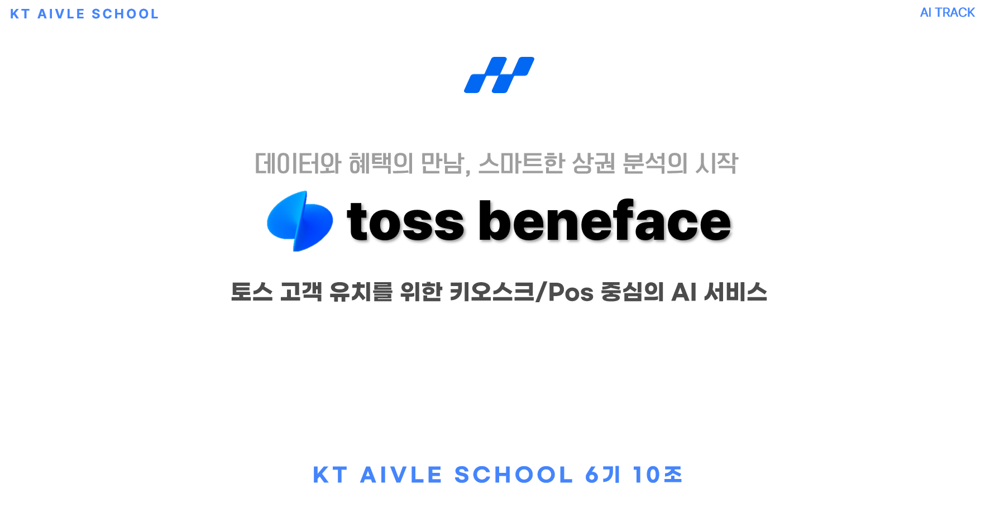
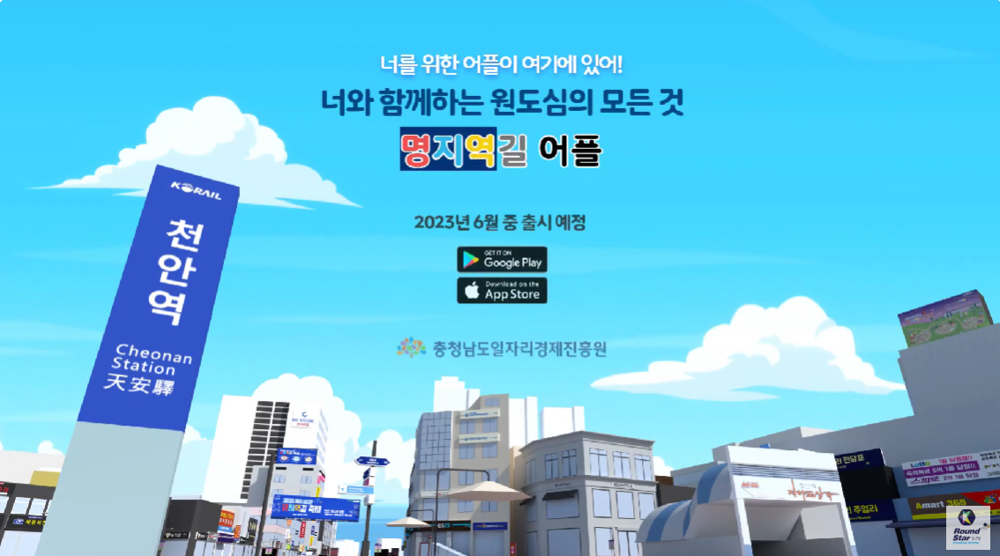
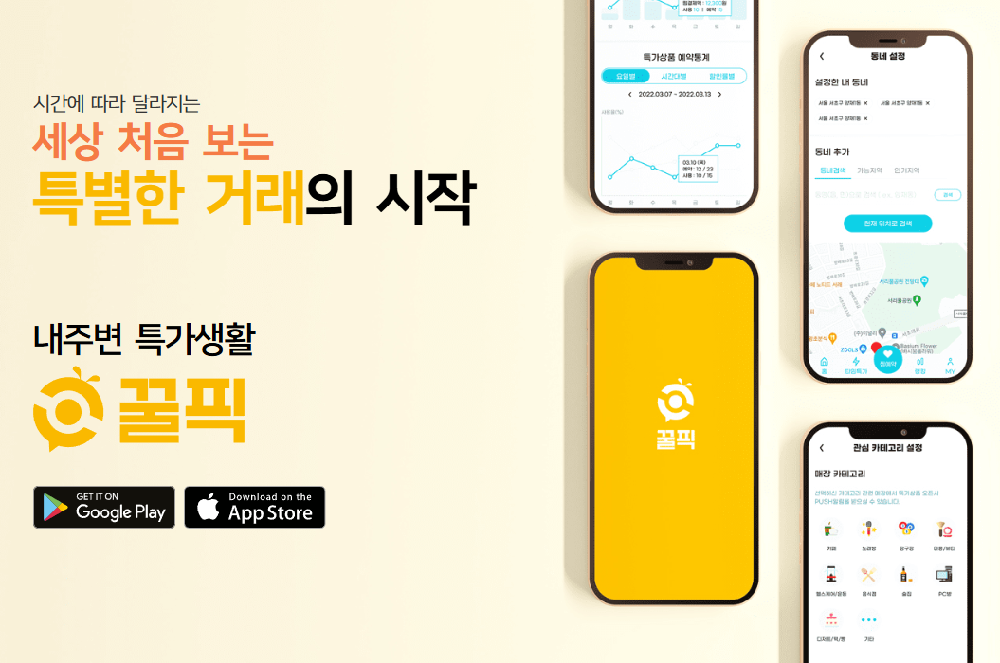

infinite
possibilities

서민석 (SEO MINSEOK)
- Birth: 2000.05.18
- Mobile: +82 10.7230.8565
- Email: seomin8565@gmail.com
데이터를 가치로 만드는 데이터 분석가 서민석입니다.
심리학을 전공하며 데이터 기반의 통찰력을 얻고자 데이터 분석 분야에 뛰어들었으며, 사람들의 행동과 마음을 숫자로 이해하는 일에 큰 흥미를 느낍니다.
- 데이터 분석에서는 폭넓은 시야를 가지고 접근합니다.
- 통찰과 시각화를 건드릴수록 경쟁력있는 결과물을 만듭니다.
EDUCATION
- 2022.09 ~ 2025.02: ○○대학교 재학 (예시)
- 2022.07 ~ 2022.08: DATA Science Summer Institute
- 2020.04 ~ 2020.08: KT AI Y.E SCHOOL(IA TREAK)
SKILL & ABILITY
- Pandas, Numpy를 활용한 데이터 분석
- 데이터 시각화 (Matplotlib, Seaborn 등)
- 머신러닝/딥러닝 기본 지식 (TensorFlow/Keras, PyTorch)
- MySQL 활용
- Git + Git-Flow 실무 경험
AWARDS
Data Science Summer Institute 우수상 수상
my works
-

-
AI-Hub 데이터셋 구축
enterprise video
2022 인공지능 학습용 데이터 구축 지원사업의 데이터 활용 환류분야에서 당뇨관리 앱을 통한 음식 이미지 활용 프로젝트에 참여하였으며, 구축된 데이터셋이 AI-Hub에 등재되었습니다.
Go site View Details -
명지역길
enterprise video

-

중기부 과제로 제작한 우리동네 골목상권의 활성화에 도움을 주는 공익적인 서비스 앱입니다. PlayStore 와 AppStore에서 다운받아 보실 수 있습니다다.
Go site View Details
Experiences
호서대학교
호서대학교 컴퓨터공학과 졸업
아이티엘
대학교 3학년부터 약 2년 6개월간 학생연구원 신분으로 아이티엘(주)에서 근무하였습니다. 크롤링을 통한 데이터 수집 자동화와 React, Node.js를 이용한 웹개발, Django로 웹앱 개발 등을 하였습니다.
음식 이미지 데이터셋 구축
‘당뇨관리 앱을 통한 음식 이미지 활용 및 환류’ 데이터셋 구축 과정에서 음식 이미지 외부 수집을 담당하였습니다. 'AI-Hub'에 데이터셋이 등재되었습니다.
지역 경제 활성화 정부 프로젝트
코로나19 장기화로 쇠퇴하는 천안의 원도심 지역의 상권 활성화를 장려하는 프로젝트를 진행했습니다. 충청남도일자리경제진흥원과 협력하였고, Unity와 Django를 이용해 상권을 웹툰배경의 가상현실 지도로 나타냈습니다.
반려동물 진단 플랫폼 개발
반려동물 진단, 산책, 및 훈련 일정 등을 체계적으로 관리할 수 있게 돕는 웹을 개발하였습니다. Django, JavaScript, JQuery 등으로 웹페이지를 구성하였고, 프롬프트 엔지니어링과 GPT API를 활용해 반려동물 진단 기능을 구현하였습니다.
꿀픽
중소벤처기업부 과제에 선정되어 진행했던 프로젝트로, 우리동네 골목상권의 활성화에 도움을 주는 공익적인 서비스를 개발하였습니다. Django와 HTML5, JavaScript를 사용하였습니다.
스마트팜
'Hoseo University AgTech Digital Twin Global Center' 와 기업'트윈나노' 에서 스마트팜 관련 자문연구원으로 활동하였습니다. 송화버섯을 인식하고 생장단계와 수확적기를 판단하는 AI모델과 쪽파를 수확하는 로봇의 소프트웨어 개발을 담당하였습니다.
KT Aivle School
KT와 고용노동부가 운영하는 Aivle School 교육 프로그램을 이수하였습니다. AI/DX 혁신사례와 경험을 바탕으로한 기업 실전 프로젝트를 중심으로 기업 실무형 AI 문제를 해결하는 방법을 배웠으며, AI, Spring Boot, HTML5, JAVA와 같은 다양한 기술스택들을 연마하였습니다.